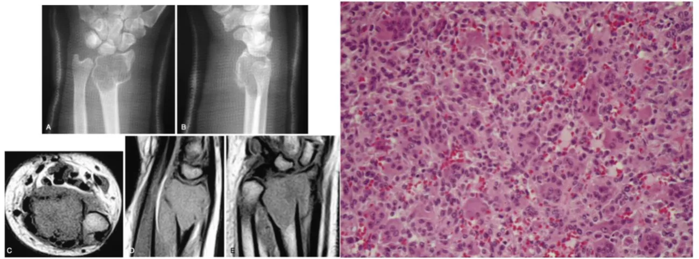
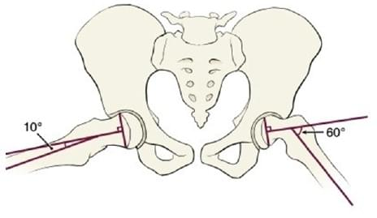

Comente a sua letra e arraste para o laudo
Para a prova: adulto, epífise, lise até o subcondral e células gigantes uniformes: pense em TCG.
Faltam 85 dias
Com o nosso cronograma, você faz o maior número de questões possível sem se esgotar. Nós planejamos tudo para você.
Crie sua conta grátis agora mesmo e conheça outras questões
Epifisiólise proximal do fêmur

O ângulo demonstrado na imagem é o de
Epifisiólise proximal do fêmur
Ângulo epifisário-diafisário no perfil em rã, comparado com o lado normal: mede a gravidade do escorregamento.
Klein e Trethowan são do AP. Drehmann é sinal clínico.
Faltam 85 dias
Com o nosso cronograma, você faz o maior número de questões possível sem se cansar tanto. Nós planejamos tudo para você.
Crie sua conta grátis agora mesmo
ortoquestoes.com.br